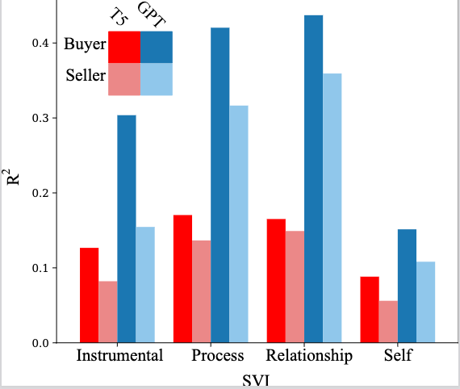
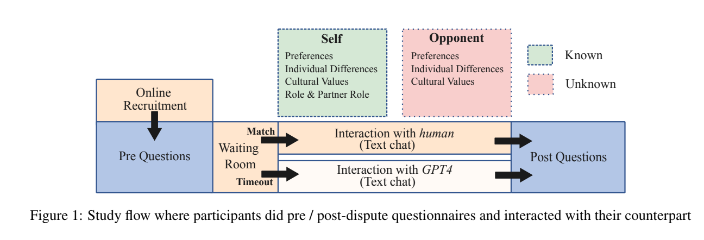
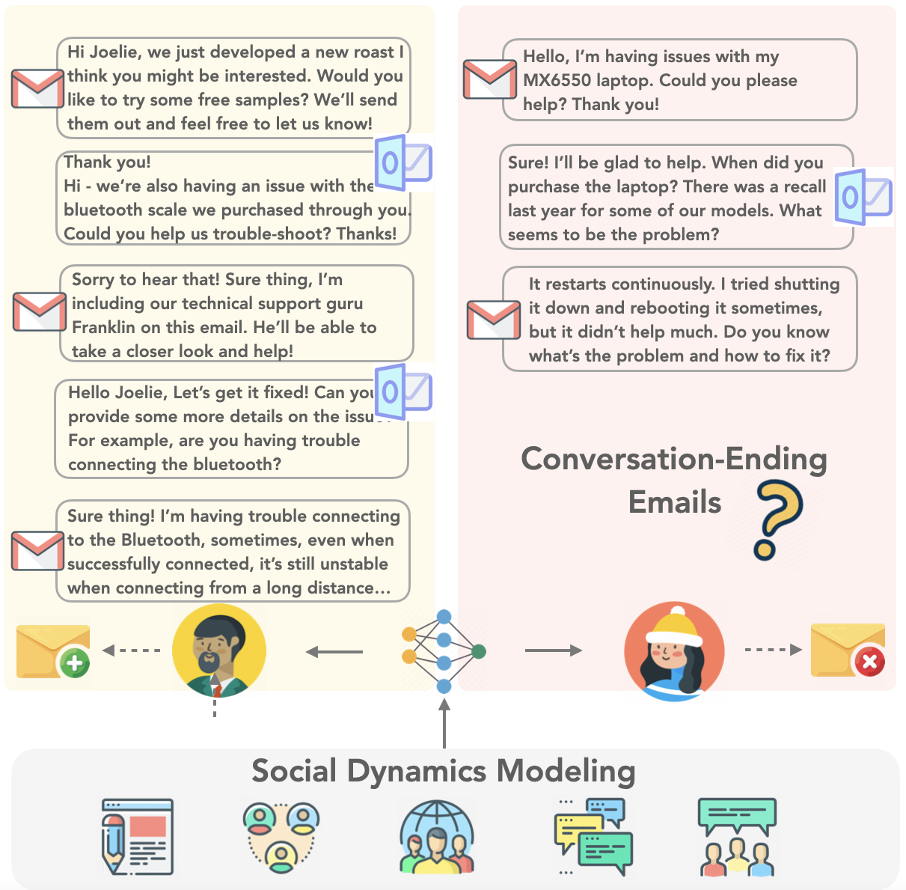
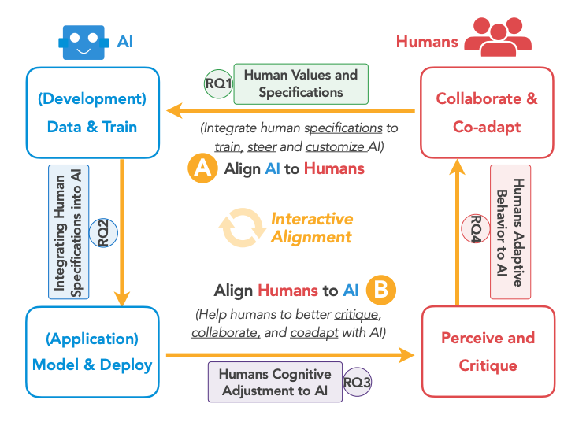
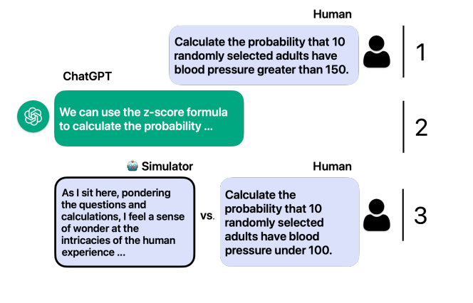

Emotionally-Aware Agents for Dispute Resolution
Affective Computing and Intelligent Interaction

KODIS: A Multicultural Dispute Resolution Dialogue Corpus
North American Chapter of the Association for Computational Linguistics

Please Reply: Causally Modeling the Linguistic and Social Factors that Predict Email Response
North American Chapter of the Association for Computational Linguistics

Position: Towards Bidirectional Human-AI Alignment
Annual Conference on Neural Information Processing Systems (Position Track)

Real or robotic? Assessing whether LLMs accurately simulate qualities of human responses in dialogue
Findings of the Association for Computational Linguistics